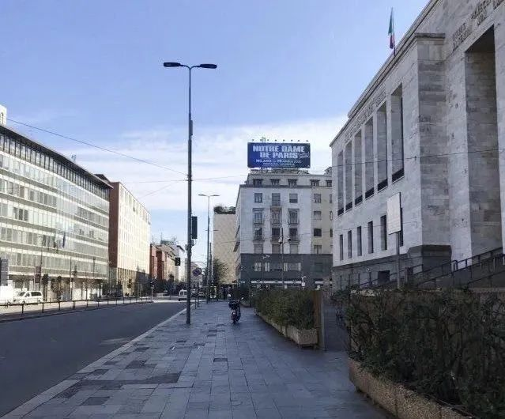
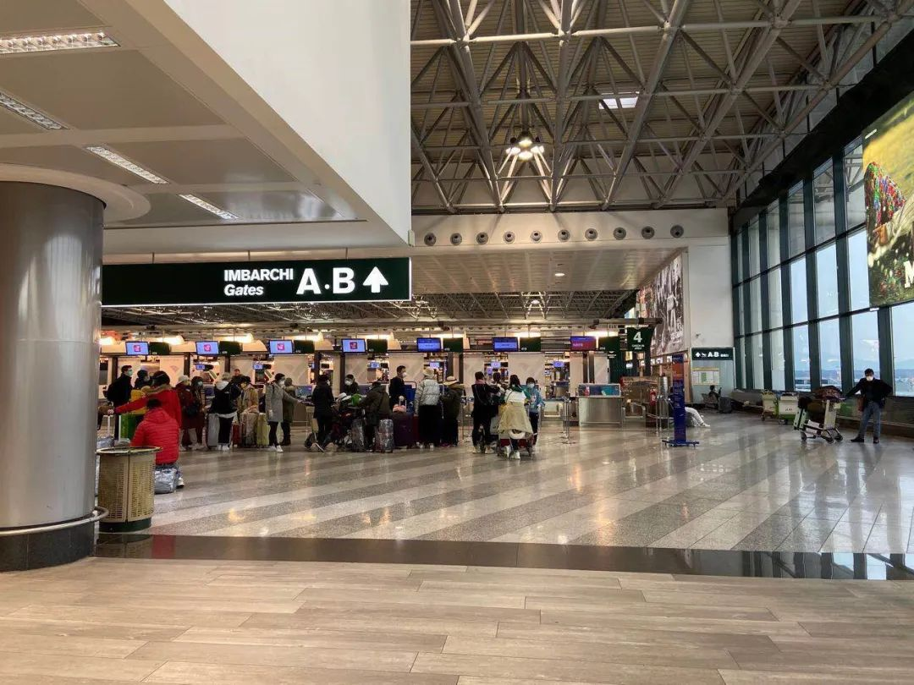
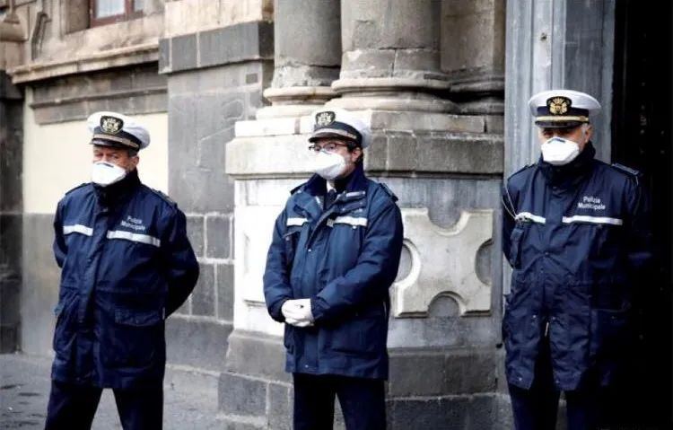
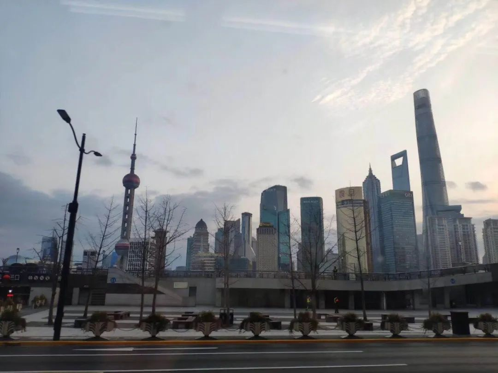

[四十日谈] 秋凉的米兰封城日记-01
原文链接 备份链接 编者荐语： 就像是武汉封城之后，许多网友开始制作自己的视频日记，这让世界了解了武汉的人们的日常与他们面对疫情的许多情绪。四十日谈也正在创建一个平台，用影像使不同国家的人们看到在意大利的人们的状态。秋凉从封城的第0天开始 …
“Dio ha scelto di stare dalla nostra parte.”
*********** ***********
***********
在2月21日之前，意大利新冠肺炎确诊病例仅有3例。然而截至当地时间3月10日，意大利新冠肺炎确诊累计过万，达10149例，死亡631例。其确诊病例和死亡病例都呈现“暴增”现象，意大利成为欧洲疫情最严重的国家，死亡率升至全球最高。
北京时间2月7日08点28分，穿过云层，从俄罗斯起飞的飞机抵达米兰。在中国直飞米兰的航班取消的情况下，邱振宇从西安坐高铁到上海去乘坐直飞俄罗斯的航班，然后又转机俄罗斯再飞米兰，按照原计划，他回到了这座城市，继续开始在异国他乡的外贸工作。
“舟车劳顿，终于到达。晚安，祝福祖国。”这是邱振宇到米兰后发的第一条朋友圈，那时的他没有想到一个月后的意大利疫情会如此严重。
意大利疫情大面积爆发已给北方地区造成严重影响，此次的两个感染集中爆发地分别位于米兰和威尼斯两座名城附近，威尼托（Veneto）大区和伦巴第（Lombrdie）大区已经宣布了相应的封锁措施。
威尼斯一年一度的狂欢节及数场意大利足球甲级联赛比赛被迫叫停，学校、博物馆、歌剧院等公共设施被迫关闭，部分地区出现对生活必需品和防疫物资的恐慌性抢购。

据安莎社的报道，受到中国疫情的影响，今年意大利奢侈品销售会面临30%的降幅。旅游市场也格外冷清，没有了春节假期的客流，威尼斯高级酒店的房价近乎腰斩。

疫情下的街道
邱振宇对此也深有体会，他现在因为疫情处于停工状态，在米兰的华人有30万左右，也有许多当地华人和他一样选择停工在家隔离，华人经营的店铺大部分已经休业，这对意大利的经济有很大影响。
返回米兰

2月初邱振宇到米兰时，恰好是国内疫情爆发期。因此他这次回米兰时，对疫情有更高的警觉。
“2月17号，我和同事一起坐火车去米兰处理工作上的事情，当时车上很少有人戴口罩”，邱振宇这样讲述他回米兰后第一次出门的情况。“但在坐火车时，有异样的眼光看着我们，甚至也有人对我们偷偷的拍照”。

对于这些，邱振宇和他的同事并没有过多的计较。所以在工作结束之后，他和同事没有选择继续坐火车，而是选择了开车返程。
“开车回去是我们最好的选择，不仅可以避免一些不必要的误解和麻烦，而且起到隔离人群的作用，不直接在公共场合接触别人。”
邱振宇也对自己和同事的身体状况也很是担心，由于就医和政策方面的缘故，一旦感染上病毒，后续留在意大利治疗将是一件非常麻烦的事情，这也让身在异国他乡的邱振宇更为重视疫情的防控。

同时受疫情影响，他所从事的外贸工作也受到了很大冲击。平常他在意大利主要负责的是物流和采购工作，需要出差到米兰以及意大利的其他地区。而随着2月中下旬疫情的大面积爆发，现在邱振宇不得不处于停工居家防疫的状态。
为了隔离期间正常的饮食作息，他与同事前往超市采购了一些食材以及生活用品等必需品。邱振宇谈到自己的心理状态时表示，不论是工作上、家庭上还是自己的健康上，都感受到了压力。
隔离这段时间，他选择看电影或者阅读来打发时间，“最近我在樊登读书上听书，让自己的心静一静，也正好利用这段时间学学英语，毕竟以后还要靠这个吃饭再说英语走到世界那里都能用”。他通过这些让自己面对疫情也更坚强勇敢，哪怕处于隔离的状态，心灵也能获得自由。
邱振宇眼中的意大利民众
“2月初我来米兰时，这里和国内截然不同，生活一如既往，大街上并没有人戴口罩。”邱振宇说，到2月21日有确诊病例之后，许多华人商店陆陆续续的关门，当地的商店依旧有很多的在营业，公司依旧照常运行。
百货大楼 香奈儿专柜
“2月下旬，米兰这里戴口罩的人并不多，确诊病例少，防护意识不高。他们把这次疫情好像看作只比流感严重的病。”邱振宇的朋友3月7日在意大利街头餐厅发了一条朋友圈，餐厅里依旧人满为患，没有人戴口罩。

人满为患的意大利餐厅
这一天也是意大利米兰开始封城的前一天，而3月7日，意大利境内的确诊人数已累计达5883例，这里人对疫情的防护意识不如国内，普遍低估了这次疫情的严重性，“由于国家体制不同，意大利很难做到让民众待在家里不外出，只是建议民众呆在家里减少外出，无法强制。”
3月10日，意大利宣布“封国”，“大街上警察一直在转，不让人乱跑，然后米兰的文艺复兴百货大楼也关门了”这是邱振宇和朋友的聊天记录，意大利疫情紧张的局势让每一个在境内的人都处于紧绷状态。

随着疫情的蔓延，意大利各地的口罩和消毒用品也几乎售罄。不论是线上还是实体店，口罩等价格也在疯狂上涨。
“之前国内疫情处于爆发期时 ，华人在当地找了很多的药店，把口罩这些防护用品寄回国内，捐赠回国了。”谈到口罩，邱振宇的反应是在意大利很难买到口罩，这些早已卖空了，平时2欧元，5欧元一包的口罩现在在意大利要卖到50 欧元、100欧元。
邱振宇说目前自己的口罩是从国内带回来的，但现在也所剩不多，也在通过朋友的渠道购买一些口罩。“最近一直待在家里，不外出应该不会浪费口罩”，在这样的情况下，从邱振宇的表述中依旧可以看到他乐观的生活态度。
据悉，目前国内侨联等相关单位会支援在意华侨口罩、预防中药以及大米等生活物资，并且提供线上医疗问诊。
“我会继续留在这里。”
根据中国国家卫健委最新通报，截至3月9日24时，兰州有33例境外输入确诊病例，这和近期从伊朗集中回国的300多人有关。
3月11日，在郑州也出现一名从意大利回来的输入型病例。国内疫情情况逐渐变好，医疗措施总体也让人放心，而意大利医院对于新冠肺炎病人的做法是重症会让住院，轻者在家自我隔离，医药费也是个人承担。
回国还是留下？邱振宇说他会继续留在意大利，“身边在意大利的国人已经有不少朋友买机票回国，但我目前没有这样的打算。
一方面，回国比较困难；另一方面，这个时候回国，不安全因素很多，在途中不知道会遇到什么样的人，有没有被感染也不确定，而且回国的话，如果被感染到，也会连累家人。不如现在就在家待着，至少可以远离密集的人群”。权衡之后，他选择继续留在意大利居家隔离。

在邱振宇看来，虽然回家是每个人遇见危险和灾难时最本能的选择，他还是选择留在意大利，“你看现在的情况，回去的好多人都确诊了，还有人隐瞒病情行程不如实申报，这对他人的生命安全也是一种不负责任的表现 ”。
希望一切会好起来
在病毒面前，没有国界，这是人类共同面临的挑战。邱振宇外派到意大利工作已经一年有余，从国内疫情爆发到意大利疫情，这些是他未料到的。
“在疫情下，每个生命都是珍贵的。外贸工作也很容易受影响，很多东西进行不下去，希望意大利的疫情可以早点好起来。”在异乡的他面对意大利严重的疫情，邱振宇内心感到害怕但依旧充满希望，对工作的希望，对生活的希望，对生命的希望。

前往上海机场的路上
最后，邱振宇感叹道，在这个特别的地方和时期，更多的是来自对祖国的自豪和骄傲，“我们的政府在面对疫情时，做的很及时，管控的效果很好，民众也很配合，感受到了民族巨大的凝聚力。”
邱振宇接受采访后的第二天，意大利发出了封城的通知，如今意大利已经封国，并紧急求助中国。希望此时在意大利的国人，无论是工作，上学或是其他都要提高防护意识，保护好自己。
“封国”后的意大利
Abbiamo vinto!
原文链接 备份链接 编者荐语： 就像是武汉封城之后，许多网友开始制作自己的视频日记，这让世界了解了武汉的人们的日常与他们面对疫情的许多情绪。四十日谈也正在创建一个平台，用影像使不同国家的人们看到在意大利的人们的状态。秋凉从封城的第0天开始 …
原文链接 备份链接 据最新数据，意大利确诊新冠病例数已超过7000，累计死亡366例，是除中国之外，全球疫情最严重的国家。 在意大利的华侨人数众多。武汉疫情起来时，他们积极捐款捐物，把当地能买到的口罩一扫而空。 意大利医疗系统对新冠 …
原文链接 备份链接 澎湃新闻特约撰稿 孙品烁 邓宗宇/央视新闻 当地时间3月5日18时，意大利民防部门负责人、新冠病毒应急委员会专员安杰洛·博雷利在例行疫情新闻发布会上表示，意大利现存新冠病毒感染肺炎病例为3296例，较前一日增长590 …
原文链接 备份链接 境外累计确诊病例即将超过2万。美国很可能有上千例潜在感染病例以及他们的密切接触者未能被及时发现和隔离，到目前为止，“我们看到的美国官方病例数字可能只是冰山一角”。 文 |《财经》数据研究员徐进 图 |《财经》 …
原文链接 备份链接 【财新网】（记者 卿滢）3月9日，意大利宣布全国各地进入“封城”，欧洲全境内的新冠肺炎疫情也进一步加剧；西班牙一夜之间确诊人数翻倍，法国文化部长和瑞典央行副行长感染。随着塞浦路斯确诊首例患者，疫情已经扩散至欧盟全境27 …